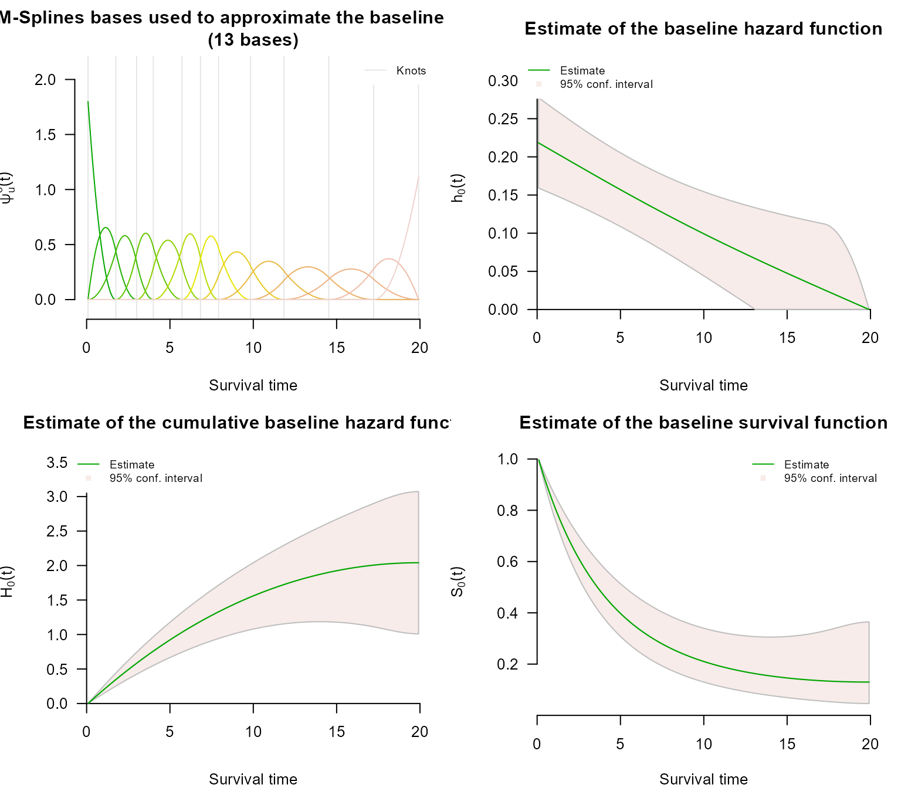
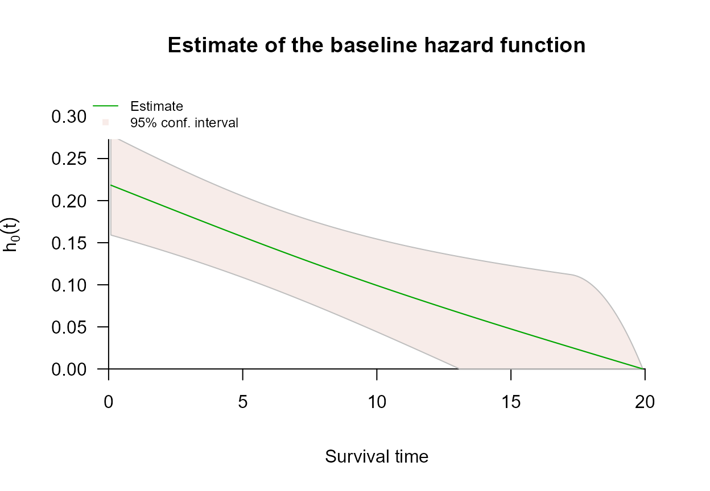
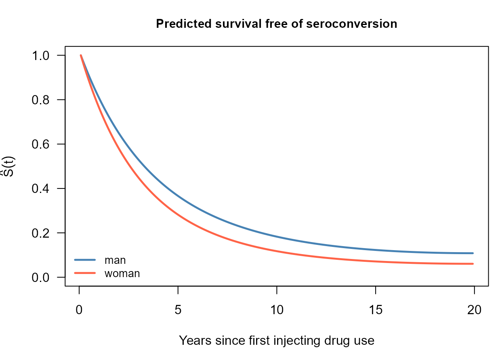

Left Censoring with survivalMPL
left-censoring.RmdOverview
A survival time is left censored when the event is known to have happened already by the time the subject is first examined, but not when. All that is recorded is an upper bound : the event occurred somewhere in . This arises whenever the outcome is detected by inspection rather than observed as it happens - a tumour already present at the first scan, seroconversion already complete at enrolment, a milestone already reached at the first assessment.
The likelihood contribution is the distribution function rather than the survivor function,
which the partial likelihood cannot accommodate: it needs a risk set
at a known event time, and a left-censored subject supplies neither.
Because coxph_mpl() estimates
explicitly, left-censored observations enter the likelihood directly,
and may be mixed freely with exact events and right- and
interval-censored observations in the same fit.
Encoding left-censored observations
Left censoring uses the type = "interval2" response,
with NA in place of the unknown lower endpoint:
library(survivalMPL)
#> Loading required package: survival
#> Loading required package: MASS
library(survival)
Surv(c(NA, 2, 3, 5), c(7, 4, NA, 5), type = "interval2")
#> [1] 7- [2, 4] 3+ 5The four observations above are, in order: left censored at 7
(7-), interval censored on
,
right censored at 3 (3+), and an exact event at 5.
Surv() records the distinction in its status code, and
coxph_mpl() dispatches on that code:
s <- Surv(c(NA, 2, 3, 5), c(7, 4, NA, 5), type = "interval2")
data.frame(status = s[, 3],
meaning = c("left censored", "interval censored",
"right censored", "exact event"))
#> status meaning
#> 1 2 left censored
#> 2 3 interval censored
#> 3 0 right censored
#> 4 1 exact eventNote that NA here is information, not
missingness: these rows are kept, not dropped by
na.action.
Recording a left-censored observation as NA and
recording it as the interval
describe the same event, since
makes
and
identical. Both encodings are accepted; the NA form is the
one that states the intent.
Example: HIV seroconversion in people who inject drugs
The example uses drugusers from the CRAN package
icpack (Gómez et al.
2000): 940 people who inject drugs, attending a hospital
detoxification unit in Barcelona, followed for HIV seroconversion. The
data are not bundled with survivalMPL, so the code below runs only when
icpack is installed.
Time is measured from the start of injecting drug use, and HIV status is only known at test visits. That gives all four observation types:
- the first test was already positive: seroconversion happened somewhere in - left censored;
- a negative test followed by a positive one: seroconversion lies between the two - interval censored;
- the last test was negative: right censored;
- the two tests coincide: an exact time.
In drugusers, left is the last negative
test (0 if the first test was already positive) and right
the first positive test (Inf if the last test was
negative), both in months. Converting to years and replacing the open
bounds by NA gives the encoding described above:
data(drugusers, package = "icpack")
ivdu <- data.frame(
t_L = ifelse(drugusers$left == 0, NA, drugusers$left / 12),
t_R = ifelse(is.finite(drugusers$right), drugusers$right / 12, NA),
Female = as.integer(drugusers$gender == "female"),
Age_centred = (drugusers$age - mean(drugusers$age)) / 10,
period = relevel(factor(as.character(drugusers$period)), "1972-1980")
)
table(status = Surv(ivdu$t_L, ivdu$t_R, type = "interval2")[, 3])
#> status
#> 0 1 2 3
#> 343 2 530 65Status 2 marks the 530 left-censored subjects, more than
half the sample, status 3 the 65 interval-censored ones,
status 0 the 343 right-censored ones and status
1 the 2 exact times. Age_centred is age at the
start of drug use in decades, centred at the sample mean, and
period is the period in which drug use began, with
1972-1980 as the reference.
Model fit
is evaluated at
for every left-censored subject, so the shape of the baseline matters
more here than it does for right-censored data. That argues for a smooth
basis, basis = "msplines". Everything else, including the
automatic selection of the smoothing value, is left at its default;
tol is loosened to 1e-05, as in the other
articles - see Control Parameters.
fit_hiv <- coxph_mpl(
Surv(t_L, t_R, type = "interval2") ~ Female + Age_centred + period,
data = ivdu,
basis = "msplines",
tol = 1e-05
)
summary(fit_hiv)
#>
#> coxph_mpl(formula = Surv(t_L, t_R, type = "interval2") ~ Female +
#> Age_centred + period, data = ivdu, basis = "msplines", tol = 1e-05)
#>
#> -----
#>
#> Cox Proportional Hazards Model Fit Using MPL
#>
#>
#> Penalized log-likelihood : -754.9098
#> Estimated smoothing value : 1760760
#> Convergence : Yes (10 + 3148 iter.)
#>
#> Data : ivdu
#> Number of obs. : 940
#> Number of events : 2 ( 0.212766%)
#> Number of cens. : 938 (99.787234%)
#>
#> Regression parameters : Surv(t_L, t_R, type = "interval2") ~ Female + Age_centred + period
#> Estimate Std. Error z-value Pr(>|z|)
#> Female 0.231753 0.115438 2.0076 0.04469 *
#> Age_centred -0.031769 0.103845 -0.3059 0.75966
#> period1981-1985 0.081383 0.122707 0.6632 0.50718
#> period1986-1991 -0.249897 0.145466 -1.7179 0.08581 .
#> period1992-1997 -0.374042 0.286460 -1.3057 0.19164
#> ---
#> Signif. codes: 0 '***' 0.001 '**' 0.01 '*' 0.05 '.' 0.1 ' ' 1
#>
#> Baseline hasard parameters approximated using M-Splines :
#> (2 (min/max) + 8 quantile knots + 2 equally spaced knots + 3 (order) - 2 = 13 parameters)
#> 1 2 3 4 5 6
#> 1.213169e-01 2.020793e-01 2.473852e-01 2.324436e-01 2.026398e-01 1.848422e-01
#> 7 8 9 10 11 12
#> 1.762641e-01 1.859211e-01 1.986088e-01 1.615379e-01 1.045321e-01 2.307903e-02
#> 13
#> 1.039732e-10
#>
#> -----The summary counts only the 2 exact times as “events”; the other 938 subjects enter the likelihood through censored contributions. Hazard ratios with 95% confidence intervals are easier to read:
est <- coef(fit_hiv)
se <- fit_hiv$se$Beta$M2HM2
round(cbind(HR = exp(est),
lower = exp(est - 1.96 * se),
upper = exp(est + 1.96 * se)), 2)
#> HR lower upper
#> Female 1.26 1.02 1.56
#> Age_centred 0.97 0.79 1.19
#> period1981-1985 1.08 0.86 1.38
#> period1986-1991 0.78 0.59 1.03
#> period1992-1997 0.69 0.40 1.19Women seroconvert faster than men at the same age and period, by about a quarter. The hazard is lower for those who began injecting later, 22% lower in 1986-1991 and 31% lower in 1992-1997 than in 1972-1980, though only the first of these comes close to significance, and the confidence intervals are wide. Age at initiation has no detectable effect. Real data come with no known truth to compare against, so the check is robustness: the coefficients barely move when the basis is changed.
fit_unif <- coxph_mpl(
Surv(t_L, t_R, type = "interval2") ~ Female + Age_centred + period,
data = ivdu,
basis = "uniform",
tol = 1e-05
)
round(cbind(msplines = coef(fit_hiv), uniform = coef(fit_unif)), 3)
#> msplines uniform
#> Female 0.232 0.233
#> Age_centred -0.032 -0.038
#> period1981-1985 0.081 0.057
#> period1986-1991 -0.250 -0.290
#> period1992-1997 -0.374 -0.413Baseline hazard and survival

The four panels are the M-spline basis functions, then the estimated baseline hazard, cumulative hazard and survival. The hazard panel is the one to read first: the risk of seroconversion is highest soon after drug use begins and declines with its duration. The estimate is close to a straight line because the automatic smoothing value is very large; the confidence band is wide, and honestly so, since a left-censored subject only says that the event happened at some point before .
plot(fit_hiv, which = 2, ask = FALSE, cex.main = 0.9)
Predicted survival
Because is estimated, survival can be predicted for a named covariate profile rather than only compared between profiles. Here are a woman and a man who began injecting in the same period at the same age:
i_f <- which(ivdu$Female == 1 & ivdu$period == "1981-1985" &
drugusers$age == 19)[1]
i_m <- which(ivdu$Female == 0 & ivdu$period == "1981-1985" &
drugusers$age == 19)[1]
p_f <- predict(fit_hiv, type = "survival", i = i_f)
p_m <- predict(fit_hiv, type = "survival", i = i_m)
par(mar = c(4, 4.2, 3, 1))
plot(p_m$time, p_m$survival, type = "l", col = "steelblue", lwd = 2.4,
ylim = c(0, 1), xlab = "Years since first injecting drug use",
ylab = expression(hat(S)(t)), las = 1,
main = "Predicted survival free of seroconversion", cex.main = 0.95)
lines(p_f$time, p_f$survival, col = "tomato", lwd = 2.4)
legend("bottomleft", legend = c("man", "woman"),
col = c("steelblue", "tomato"), lwd = 2.4, bty = "n", cex = 0.85)
Next steps
- Interval Censoring covers the general partly interval-censored case, of which left censoring is the boundary instance, and uses a dataset containing all four observation types at once.
-
Right Censoring covers the standard scheme and the
Surv(time, status)response. -
Control Parameters explains
n.knots,basisandsmooth, the settings that decide how much structure the baseline hazard is allowed to have. - Basis Functions for the Baseline Hazard explains the choice of ; because enters the left-censored likelihood directly, that choice matters more here than for right-censored data alone.